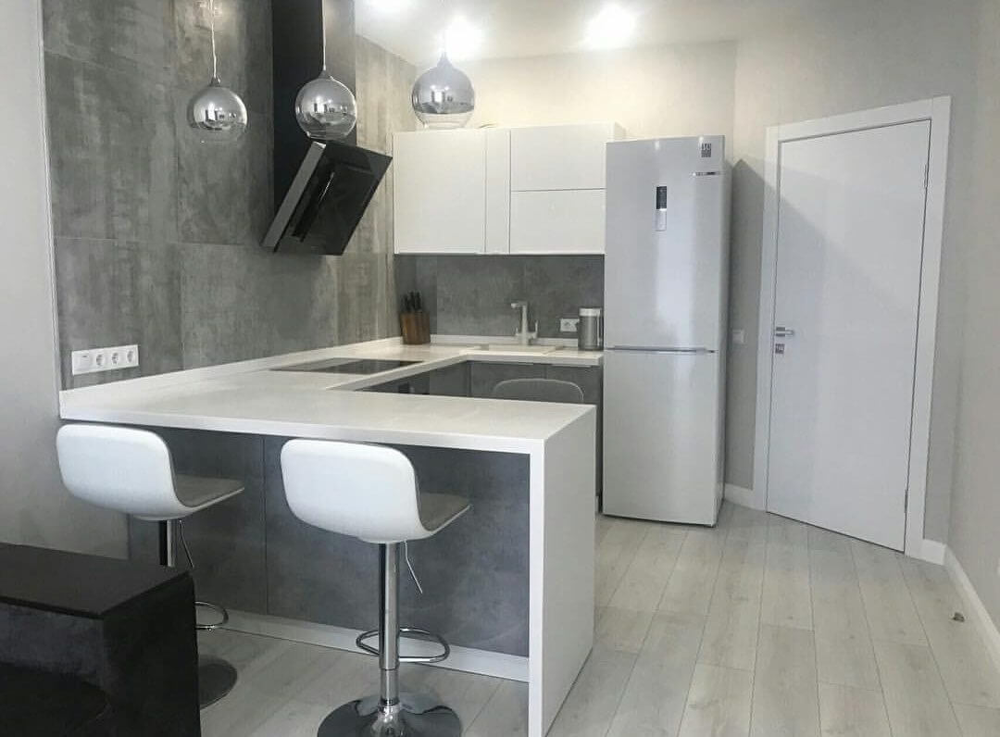

КУХНИ НА ЗАКАЗ ОТ ПРОИЗВОДИТЕЛЯКухня.
Кухня.
По вашим привычкам.
Кухни на заказ от производителя в Самаре. Подберём планировку, фасады и фурнитуру, подготовим проект под ваше помещение.
Обсудить мой проект
МАТЕРИАЛЫ И РЕШЕНИЯМесто для готовки.
Место для готовки.
Место для жизни.
Выберем расположение техники, рабочие поверхности и хранение. Согласуем внешний вид и наполнение, чтобы кухня подходила вам каждый день.
Рассчитать мой проект